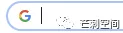
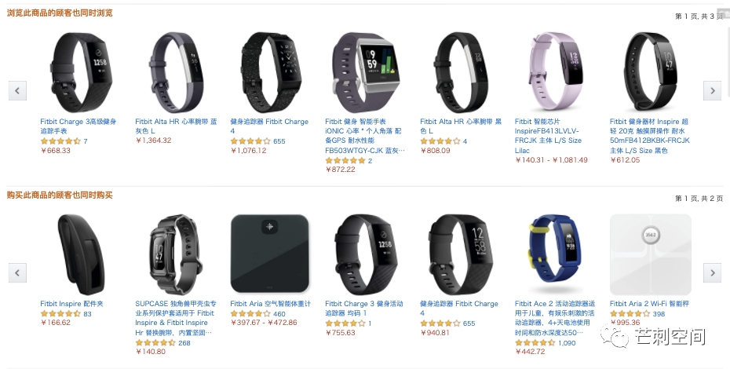
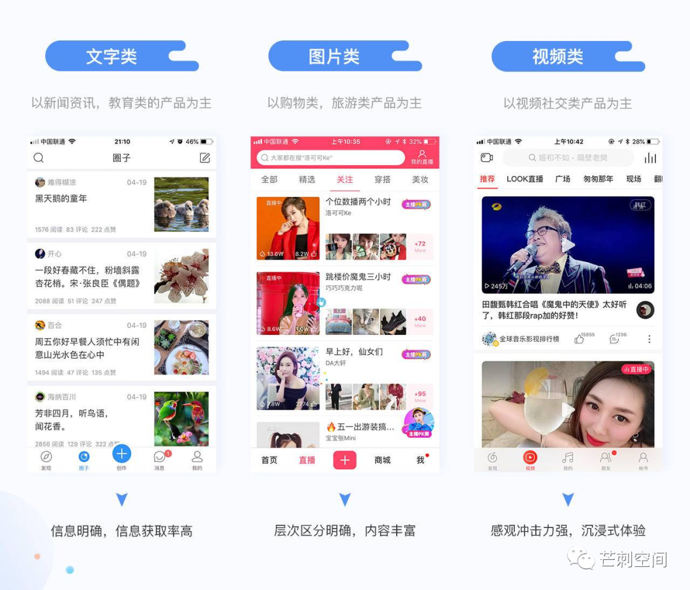

对不起了，做信息流的产品、算法同学们。我真的觉得信息流不是个好的产品模式，虽然它商业上可能真的是个成功的产品模式。
如果说我们的网上生活在 201X 年之前是搜索的，那么 201X 年之后就是推荐的。这不是头条 vs 百度，不是 feed 流 vs google，说的是被推荐系统影响了的每一个人，包括且不限于：在微信最新的以推荐为基础的公众号信息流里看到这篇文章的你，在写这篇文章前躺在床上刷了 2 个小时知乎推荐的我，半年前我去买早餐时看到在路边休息刷快手的老阿姨…
搜索引擎可能是信息时代最为优雅的产品了。它长这样

推荐系统还是目前十分性感的产品。它可以有很多种形态，但主要以 feed 流形式行走江湖。它曾经也单纯过，现在也有继续单纯的，比如豆瓣的推荐、亚马逊的推荐。

目前的推荐系统，基本都长这样：（下图来自网络）

就像反对默认进推荐栏，支持默认进订阅栏一样。我反对将推荐系统做成无休止模式。我认为有穷推荐才是真正的推荐，无穷推荐就是耍流氓。这个道理简单无比：你能有多相信导购姐姐给你推荐的第 3 + n 件衣服是她真的觉得适合你的？他们只是在试试看你愿不愿意消费这件衣服、这篇内容而已。
把适合的内容推荐给你需要几步？（本文不是技术讨论，所以会很粗略，见谅）
- 计算你的行为模式，整理出你的兴趣点。
- 计算平台上的内容特征，给出每条内容和某一类兴趣点的相关性。
- 根据1和2，匹配你的兴趣点和内容，并按相关度给出所有内容的排序，你最有可能喜欢的排在最前面。
- 推荐内容被曝光给你。
由此可见，[结论1] 推荐系统一般会优先将最合适的内容最早地推荐给我。
考虑到平台上新内容的生产效率，有[结论2]最新的合适内容也会最早地推荐给我。所以[结论3]，只需要刷个一小会儿，后面的推荐内容要么质量不高，要么和我相关性不高。综上，推荐系统给出的内容，我刷几页即可。
这个结论说明，推荐系统对客户而言是边际效益递减的。对平台而言，肯定也是边际效益递减的。但对平台而言，边际成本也是递减的，你多刷几次，也不过是程序多响应几次。对客户而言，边际成本恒定，就是你的时间。甚至在较长时间后，是边际成本提升的，你的精力不够了。
西人云：Netflix 要争夺的不是客户的娱乐时间，而是客户的睡眠时间。
Sorry，我觉得没必要再花时间写这个帖子了。大意已经表述清楚了，形式已经不重要了。
不是说我不喜欢推荐系统，我也有很喜欢的推荐系统。比如网易云音乐的每日推荐。（无法插入网易云链接吗？）